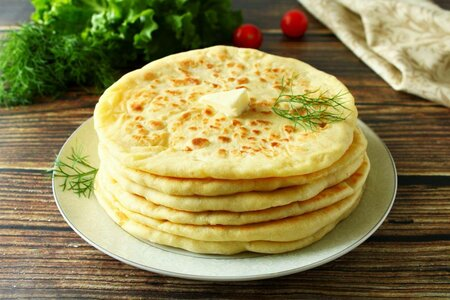

Ч1епалгш

"Ингредиенты"
- 500 мл кефир
- 500 гр мука
- 1/2 ч. л. сода
- 500 гр творог
- 1 шт яйцо
- по вкусу зелень
- 300 гр масло сливочное
Шаги для пригтовления
-
ПРИГОТОВИМ ТЕСТО ДЛЯ ЧЕПАЛГАШ
Просеем муку с чашку или на стол горкой, сделаем углубление, всыплем
соль. В кефир всыплем соду – он начнет бурлить – это сода гасится.
Обязательно использовать только теплый кефир. Выльем кефир в муку,
замесим тесто постепенно, не закручиваем сразу. Тесто должно получиться
мягким, податливым. Накроем тесто салфеткой или пленкой, даем выстояться
около получаса. 2 СДЕЛАНО ПРИГОТОВИМ НАЧИНКУ ДЛЯ ЛЕПЕШЕК
-
ПРИГОТОВИМ НАЧИНКУ ДЛЯ ЛЕПЕШЕК
Творог смешаем с яйцом, мелко нарезанным зеленым луком. Обратите
внимание: творог не должен быть изначально жидким, мокрым! Попробуйте
начинку на вкус, подсолите, если слишком пресно на вкус. Разделим
начинку на приблизительно равные части – 8-9
-
ПРИСТУПИМ К ФОРМИРОВАНИЮ ЛЕПЕШЕК
Тесто разделим на равные колобки (8-9). Расплющим каждый колобок,
выложим на середину колобок из начинки (2-3 столовых ложки). Края
лепешки соберем сверху и залепим, получив колобок с начинкой. Полученный
колобок слегка расплющим пальчиками и ладошкой до плоского круглого
состояния (смотрите на фото). Начнем раскатывать от серединки к краям,
так легко получить лепешку круглой формы, а уж потом работать скалкой на
полную силу. Добавляйте муку, не бойтесь, если немного лука покажется
наружу. Лепешка должна получиться тонкой. У меня сковорода диаметром 28
сантиметров - получается 8-9 лепешек.
-
ЖАРИМ НА СУХОЙ СКОВОРОДЕ БЕЗ ДОБАВЛЕНИЯ МАСЕЛ
Раскалим сковороду, выложим лепешку. Жарим на каждой стороне по 2
минуты. Готовые лепешки перекладываем на блюдо, прикрываем крышкой или
полотенцем, чтобы оставались теплыми. На сковороде может скапливаться
мука и гореть. Просто смахните ее сухой салфеткой
-
ПРОМЫВАЕМ И СМАЗЫВАЕМ
Растопим сливочное масло. Промоем чепалгаш. Для этого нальем горячую
чистую воду в чашку или сковороду. По очереди окунаем лепешки в воду,
затем складываем горкой. Промывая горячей (чтобы могли выдержать пальцы)
водой, мы удаляем муку. Обильно поливаем каждую лепешку растопленным
сливочным маслом
-
ПОДАЁМ!
Готовые чепалгаш (Chechen chepalgash – ЧIепалгаш) разрезаем на четыре
или восемь частей. Подаем к столу горячими с растопленным сливочным
маслом в пиале с горячим чаем. Приятного аппетита!